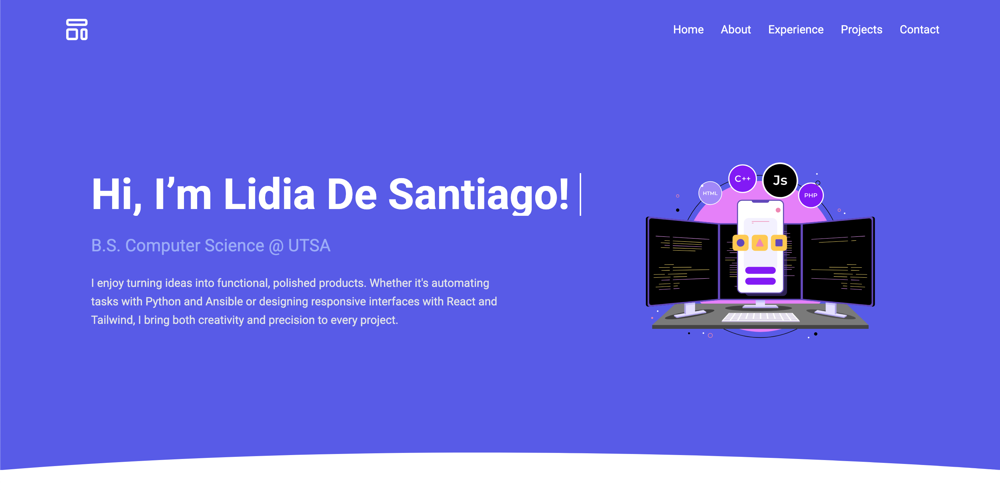

Design Work
Pomodoro To-Do App
A productivity app that combines a Pomodoro timer with task tracking, built using React Native and Firebase.
Java
Firebase
XML
I'm So Cooked! App
A gamified cooking education app where users progress through global recipe levels, answer quizzes, and explore interactive food facts. Built with Expo, React Native, and Tailwind CSS.
React Native
Expo
Tailwind CSS

Gustavo's Carpentry
Designed and developed a responsive website for a local carpentry business using HTML, CSS, JavaScript, and Bootstrap.
HTML
CSS
JavaScript
Bootstrap

Portfolio Website
A responsive and modern developer portfolio to showcase my projects, technical skills, and contact information. Built with HTML, Tailwind CSS, and JavaScript for smooth interactivity and mobile-friendly design.
HTML
Tailwind CSS
JavaScript

San Antonio For Christ Website
A responsive, mobile-optimized church website for San Antonio For Christ. Includes service times, volunteer opportunities, ministry info, a custom resources section, and GitHub Pages deployment. Built with Vue 3, Tailwind CSS, and Vite.
Vue 3
Tailwind CSS
Vite
GitHub Pages